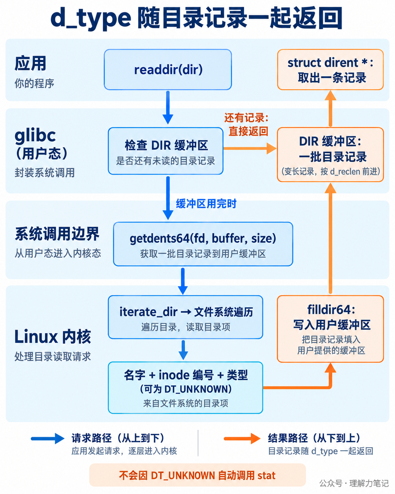
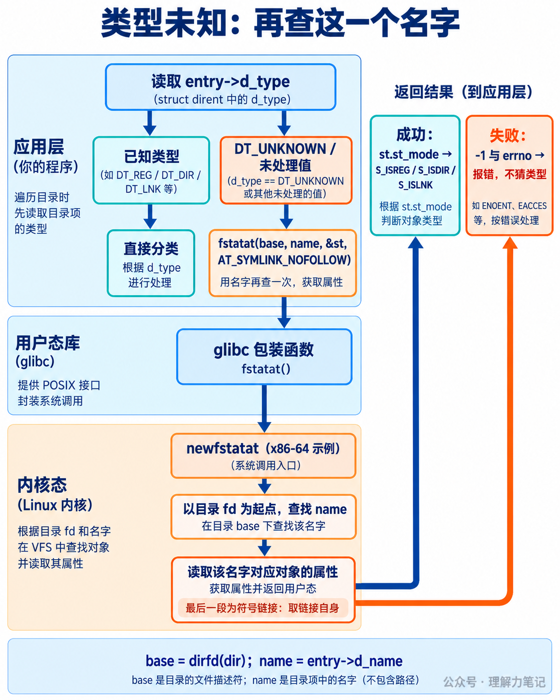

d_type 为何不能直接当作文件类型的答案？用 readdir 遍历目录，看到 entry->d_type == DT_DIR 就把它当成子目录，其余都当普通文件。这段代码在自己的机器上可能一直正常，换一个挂载目录却漏掉了子目录。
问题出在“其余”里面。d_type 还可能是 DT_UNKNOWN，表示这条目录记录没有提供确定的类型信息。它并没有说这个名字不是目录。
结论： 做目录列表分类时，可以使用已识别的
d_type；遇到DT_UNKNOWN，按名字补查元数据。本文用fstatat(dirfd(dir), name, &st, AT_SYMLINK_NOFOLLOW)，保持与d_type一致的符号链接语义：判断链接自身。补查失败就报告错误，不能猜成普通文件。这样的分类仍不保证后续操作时名字对应的对象没有变化。
这篇文章怎么读？
第一章给出完整程序和真实输出；第二章解释类型信息从哪里来；第三章说明这套写法能用到哪里。
| 你是谁 | 看哪一章 | 会得到什么 |
|---|---|---|
| 搜索者 / 被推荐者 | 第一章 · 先解决问题 | 处理未知类型的完整遍历程序 |
| 学习者 | 第二章 · 机制解释 | 目录记录、内核对象与补查路径 |
| 编程者 | 第三章 · 工程使用 | 链接语义、失败处理和竞态边界 |
| 求职者 | 第四章 · 面试提炼 | 说清类型未知与类型检查的限制 |
DT_REG 表示普通文件，DT_DIR 表示目录，DT_LNK 表示符号链接。管道、套接字和设备也有各自的类型。DT_UNKNOWN 则是“信息不足”，不能与其中任何一种画等号，也不意味着 readdir 调用失败。
下面的程序只列一层目录，跳过 . 和 ..。它优先使用已识别的类型值，其余情况交给 fstatat。输出中的 via= 会告诉你这次分类走了哪条路。
保存为 entry_types.c：
mode_type 检查 st_mode 中的文件类型位；entry_type 负责选择信息来源。补查成功时返回类型名称，失败时返回 NULL，调用方保存 errno、报告这个名字的错误，然后继续列其他项。出现过任何失败，程序最终返回非零状态，避免把部分清单当成完整结果。
--unknown 是实验开关：让程序忽略实际读到的 d_type，强制走补查分支。它不改变文件系统，也不声称当前文件系统真的返回了 DT_UNKNOWN。
本次在 macOS 14.8.8、Darwin 23.6.0 x86_64 上用 Apple clang 16.0.0 实测，以下严格编译没有警告。程序也面向 Linux/glibc 编写，但本次没有可用的 Linux 运行环境；第二章的 Linux 行为通过固定版本源码核验。
在一个新的实验目录中准备样本。下面用 Python 3 创建（你也可以用命令行shell命令）普通文件、子目录、有效链接、悬空链接、命名管道和 Unix 域套接字路径；关闭套接字后，路径保留到手动删除为止。
正常读取时，本机这六条记录都提供了可识别的 d_type，退出状态为 0：
加上 --unknown，六项分类相同，全部改由 fstatat 获得，退出状态仍为 0：
输出顺序由这次遍历决定，不是接口保证；其他机器可以按不同顺序列出。代码用符号常量判断类型，不依赖 DT_DIR 等常量的具体数值。
请留意 dangling：它的目标 missing 不存在，但链接自身存在，因此补查仍成功并输出 symlink。如果把 AT_SYMLINK_NOFOLLOW 换成 0，补查会跟随链接，查询这个悬空链接时就会失败。
实验验证了补查分支和链接自身的分类，也覆盖了空目录、路径不存在、把普通文件作为目录传入等情况。测试包装还模拟了补查被中断、权限不足、目录读取失败，以及读到名字后文件被删除；这些是受控测试，不是对某种文件系统行为的观测。没有实测自然返回 DT_UNKNOWN 的挂载目录，也没有用这组实验测量性能。
opendir("demo") 打开的是 demo 这个目录。返回的 DIR * 指向用户态目录流，里面保存目录描述符和读取缓冲区等状态。readdir 返回的 struct dirent 则是一条记录，其中 d_name 可能是 note.txt，d_type 描述这个名字对应对象的类型。
图中 fd 的数值只是例子。在 Linux 中，它用作描述符表的索引，槽位保存 struct file *。这里的 struct file 表示打开的目录，f_inode 指向目录自身的 inode；inode 保存对象的类型、权限等元数据。文件 note.txt 有自己的 inode，不能把目录自身的类型拿来回答“这一项是什么”。
struct dirent 是返回给应用的目录记录，不是内核缓存路径查找结果所用的 struct dentry。读到一条记录，也不表示程序已经打开了对应的子文件。
下面限定 Linux 6.6 与 glibc 2.40 的常见 x86-64 路径。目录流缓冲区还有未消费的记录时，readdir 直接返回下一条；缓冲区用完后，glibc 才通过 getdents64 向内核取一批记录。

内核的 iterate_dir 调用文件系统提供的目录遍历操作，文件系统把名字、inode 编号和类型交给输出回调；filldir64 把这些信息写进用户提供的缓冲区。glibc 按记录的 d_reclen 前进，逐条交给应用。因此图里的“一批记录”是按记录长度排列的数据，不能拿固定的 sizeof(struct dirent) 作为步长。
这条路径中的类型由文件系统提供。以 ext4 为例，它的目录记录可以保存 file_type，内核把这个值映射为 DT_REG、DT_DIR 等。Linux 6.6 的 get_dtype 在文件系统没有启用相应特性或收到超出范围的类型值时返回 DT_UNKNOWN。这说明即便知道文件系统名称，也不该删掉未知分支；更不能把某一台机器的挂载结果当成所有环境的保证。
glibc 这段读取实现不因 DT_UNKNOWN 再查询一次元数据，应用拿到的仍是未知值。能直接使用类型信息时，就省掉逐项补查的调用；需要更完整的属性时，仍要调用查询接口。
dirfd(dir) 取出已打开目录流的描述符。将它与 entry->d_name 一起交给 fstatat，就是“在这个目录下查这个名字”。

这里用 AT_SYMLINK_NOFOLLOW，查询路径最后一段如果是符号链接，就取得链接自身的属性。readdir 返回的名字不含路径分隔符，因此补查的是这个目录的直接子项。成功后用 S_ISREG(st.st_mode)、S_ISDIR(st.st_mode)、S_ISLNK(st.st_mode) 等宏判断；失败后才读取 errno。DT_* 与 st_mode 的类型位属于两套表示，不要直接互相比较。
图中的 newfstatat 是该 Linux/glibc x86-64 实现路径的例子。其他架构和配置可能经由 fstatat64 或 statx 等系统调用，库还可能转换结果布局；应用依赖的是 fstatat 接口语义。
补查也不等于每次都从磁盘重读 inode，路径和属性可能由缓存满足，具体行为取决于文件系统。它增加了一次按名字查询的工作，却不会把遍历与查询合并为一次原子操作。
本文两条分类路径都把符号链接列为 symlink。如果需求是“把指向目录的链接也算作目录”，就需要跟随链接查询目标。即便 d_type 已经是 DT_LNK，也不能直接得出目标类型；同时要处理悬空链接和链接循环等失败。
| 你需要的结果 | 合适的做法 |
|---|---|
| 目录项对应对象自身的类型 | 已识别的 d_type，未知时用带 AT_SYMLINK_NOFOLLOW 的 fstatat |
| 符号链接目标的类型 | 对需要查询的名字用 fstatat(base, name, &st, 0)，检查失败 |
| 大小、权限、时间等完整元数据 | 直接查询 stat 类接口，d_type 不包含这些属性 |
| 已经打开的文件对象的类型 | 对持有的 fd 调用 fstat |
不要为了省一次查询而改变业务含义。递归遍历时是否进入符号链接指向的目录，也必须事先决定，否则还会引入循环和越界遍历问题。
d_name 只有文件名。如果进程在 /tmp 下遍历 /data/demo，直接调用 lstat("note.txt", &st) 查的是当前工作目录下的名字，可能找不到，也可能查到另一个同名文件。
使用 fstatat(dirfd(dir), entry->d_name, ...) 可以把查找起点绑定到已打开的目录，不依赖当前工作目录，也不用拼接固定长度的路径缓冲区。dirfd 返回的 fd 由目录流持有，属于借用资源；清理时交给 closedir 关闭，不能额外 close 一次。
entry 指向目录流管理的存储，需要在下一次读取之前消费或复制名字。本文当场补查，不保存指针。多线程共享同一个目录流时，应同步“读取并使用当前记录”的整个过程。
DT_UNKNOWN 是成功读取的记录里缺少类型信息；fstatat 返回 -1 才表示补查失败。失败时不能继续读 st_mode，也不能用 file 填补空白。
名字在读取后被删除，补查可能得到 ENOENT；缺少目录搜索权限，可能得到 EACCES。能列出目录名字，不代表一定有权限查询其中每个名字的属性。本文选择报错后继续遍历，并让最终退出状态失败；索引服务可以按需求将消失项记为跳过，但应明确记录这次扫描是否完整。
代码对补查的 EINTR 重试，对其他补查错误报告后继续。readdir 的错误则结束本次遍历，不把部分结果说成全部。无论在哪个阶段失败，已经打开的目录流都走同一个关闭出口；输出还检查 printf 与最终 fflush，以发现缓冲写入失败。
假设程序读到 note.txt 是普通文件，另一个进程随即把这个名字换成符号链接。此时再按名字打开，得到的对象可能已经变了。即使每一项都无条件调用 fstatat，替换也可以发生在查询返回之后。
dirfd 固定的是查找起点，不会锁住目录内容，也不会锁住一个名字与对象的对应关系。用于展示的分类结果可以接受这种时间差；如果后续操作依赖对象身份，就需要把打开时的路径约束与打开后的 fd 检查一起设计，比如按需求禁止跟随最终链接，拿到 fd 后用 fstat 检查该对象，并通过同一个 fd 继续操作。具体打开方式还要考虑特殊文件的阻塞或副作用，不能把“先打开再检查”当成所有场景的安全模板。
Linux 和 macOS 都提供 struct dirent.d_type，本文的 _DEFAULT_SOURCE 和 _DARWIN_C_SOURCE 用于各自系统的声明可见性；它们不会让文件系统自动具备类型信息。
POSIX.1-2024 仍不要求 struct dirent 必须有 d_type 成员。新规范里的 struct posix_dent 有这个字段，但它是另一种结构，不能据此推断所有平台的 readdir 返回结构都一样。
如果目标是只依赖 POSIX 目录流接口，可以删掉 entry_type 里读取 e->d_type 的整个 switch 快速路径，让每项都走 fstatat，并使用 S_IS* 判断。对跨平台库，也可以在构建时检测结构成员是否存在，再启用优化；仅判断 DT_UNKNOWN 宏是否定义不足以证明 struct dirent 有相应成员。
为什么不能只看 d_type？ 文件系统可能不提供确定的类型，返回 DT_UNKNOWN。它表示未知，不能按“不是目录就是普通文件”处理。做对象自身的分类时，可以在未知分支用相对目录 fd 的 fstatat 补查，并禁止跟随最终符号链接。
为什么补查不用 stat(entry->d_name)？ 这个名字是相对于被遍历目录的，直接 stat 却按当前工作目录查找；而且 stat 会跟随符号链接，与按 d_type 分类链接自身的语义不一致。
每一项都查一次元数据，就消除竞态了吗？ 没有。名字在查询后仍可被替换，查询返回的是当时查到的对象属性。需要对后续对象身份负责时，必须结合打开时的约束和 fd 操作设计。
d_type、DT_UNKNOWN、目录记录生命周期与遍历顺序。struct dirent 与 struct posix_dent 的成员要求。filldir64 和 ext4 类型映射。本文为公众号「理解力笔记」原创。转载请联系作者，并保留出处。